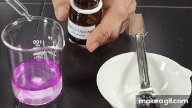

<h1 id="page-title-node-content" class="page-title" data-testid="page-title" style="accent-color: rgb(11, 161, 161); background-color: rgb(255, 255, 255);">Reacción química</h1>
🧪 La reacción química
Una reacción química es un proceso en el que unas sustancias iniciales se transforman en otras diferentes. Esto ocurre porque los átomos de las sustancias iniciales se reorganizan de otra forma y dan lugar a nuevas sustancias.
Un átomo es la unidad fundamental de la materia y la partícula más pequeña de un elemento químico que conserva sus propiedades. Cada elemento está formado por un único tipo de átomo. Los átomos se representan mediante símbolos químicos, que siempre comienzan con letra mayúscula. Por ejemplo: H, O, Cu, Fe, C, Co...
Cuando dos o más átomos se unen entre sí mediante enlaces químicos, forman una molécula. Por ejemplo: H2O, FeO, NaCl, KOH
¿Qué ocurre en una reacción química?
Las sustancias de partida se llaman reactivos y las sustancias que se obtienen al final se llaman productos. Y estas nuevas sustancias tendrán propiedades distintas.

¿Cómo sabemos que se ha producido una reacción química?
Algunas señales que pueden indicar que se ha producido una reacción química son:
- 🎨 cambio de color
- 💨 desprendimiento de gas
- 🧂 formación de un precipitado
- 💡 emisión de luz
- 🔥 liberación de calor
- ❄️ absorción de energía



Estas señales indican que pueden estar formándose sustancias nuevas.